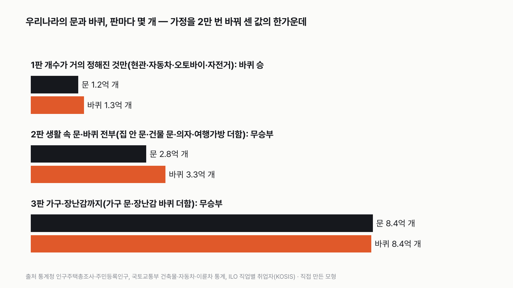
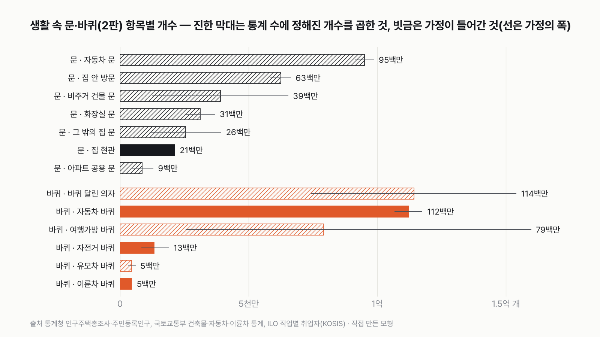
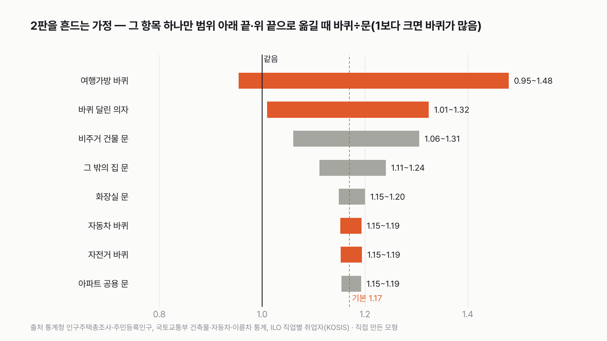

우리나라에는 문이 많을까, 바퀴가 많을까
자동차는 문 넷, 바퀴 넷으로 거의 비겨요. 그럼 승부는 어디서 갈릴까요? 먼저 골라 주세요.
독자 투표
우리나라에는 문이 더 많을까, 바퀴가 더 많을까?
- 인터넷을 크게 갈라놓은 질문이에요. 문이 더 많을까요, 바퀴가 더 많을까요?
- 공식 통계로 셀 수 있는 우리나라를 세어 봤어요. 집과 건물, 자동차, 자전거, 사무실 의자, 여행가방까지요.
- 무엇을 문과 바퀴로 칠지에 따라 세 판으로 겨뤘어요. 투표하면 결과가 바로 아래에 열려요.
조건과 규칙
- 문은 사람이 드나드는 문이에요. 집 현관과 방문, 화장실 문, 아파트 공용 문, 가게·공장·학교 같은 건물의 문, 자동차에서 사람이 타는 문이에요. 서랍은 문이 아니에요.
- 바퀴는 굴러가는 바퀴예요. 자동차·오토바이·자전거, 바퀴 달린 의자, 여행가방, 유모차 바퀴예요. 자동차 운전대는 바퀴가 아니에요.
- 옷장·냉장고 같은 가구·가전 문과 장난감 바퀴는 마지막 판에서만 세요. 기계 속 톱니와 베어링은 세지 않아요.
- 세계 전체는 공식 통계가 자동차 정도뿐이라, 통계로 셀 수 있는 우리나라로 겨뤄요.
결과 요약
3판 바퀴 1승 2무 → 최종 바퀴 판정승. 집만 보면 문이 많지만, 의자 밑까지 세면 바퀴가 살짝 앞서는 박빙이에요.
- 개수가 거의 정해진 것만 세면 바퀴가 1.12배로 이겨요. 집 현관과 자동차 문 1.16억 개, 자동차·오토바이·자전거 바퀴 1.30억 개예요.
- 집 안 방문, 건물 문, 사무실 의자, 여행가방까지 다 넣으면 바퀴 3.30억 개, 문 2.83억 개예요. 바퀴가 앞서지만, 의자와 여행가방 개수를 센 통계가 없어서 무승부예요.
- 가구 문과 장난감 바퀴까지 넣으면 둘 다 8.4억 개로 거의 똑같아요.
독자 예상 vs 데이터 결과
우리나라에는 문이 더 많을까, 바퀴가 더 많을까?
데이터로 보면 바퀴. 바퀴 판정승(1승 2무)이에요. 집만 보면 문이 많지만, 의자와 여행가방 바퀴까지 세면 바퀴가 살짝 앞서요. 사실상 박빙이에요.


숫자 두 개로 줄이면 이래요. 자동차만 놓고 보면 문 9,500만 개, 바퀴 1억 1,200만 개로 바퀴가 조금 많아요. 차 밖에서는 집과 건물의 문 1억 8,800만 개와, 바퀴 달린 의자·여행가방 바퀴 1억 9,400만 개가 맞서요.
| 판 | 문 | 바퀴 | 바퀴 ÷ 문 | 승자 |
|---|---|---|---|---|
| 1판 개수가 거의 정해진 것만 | 1.16억 개 | 1.30억 개 | 1.12배 | 바퀴 |
| 2판 생활 속 문·바퀴 전부 | 2.83억 개 | 3.30억 개 | 1.17배 | 무승부 |
| 3판 가구·장난감까지 | 8.39억 개 | 8.35억 개 | 1.00배 | 무승부 |
| 최종 | 3판 바퀴 1승 2무 → 바퀴 판정승 |
통계가 없는 개수는 가능한 범위 안에서 값을 바꿔 가며 2만 번 셌어요. 표의 개수는 그 2만 번 가운데 딱 한가운데 값이에요. 2만 번 가운데 위아래 끝 5%씩을 뺀 나머지에서 바퀴가 많을 때도 있고 문이 많을 때도 있으면 무승부로 정했어요. 이 규칙과 가정이면 최종 승자는 바퀴예요. 다만 확실히 이긴 판은 하나이고, 나머지 둘은 무승부예요.
1판 개수가 거의 정해진 것만: 바퀴 승(1.12배)
문과 바퀴 양쪽에서 개수가 거의 정해진 것만 남겼어요. 문은 집마다 하나인 현관과 자동차 문, 바퀴는 자동차·오토바이·자전거 바퀴예요. 집 현관 2,130만 개와 자동차 문 9,510만 개를 더하면 1.16억 개, 자동차 바퀴 1억 1,220만 개에 오토바이와 자전거 바퀴를 더하면 1.30억 개예요. 2만 번 가운데 99.96%에서 바퀴가 많았어요.
자동차 한 대에 문은 넷, 바퀴도 넷이라 거의 비겨요. 그런데 화물차는 문이 둘인데 바퀴는 넷에서 여섯이 넘고, 2인승이나 문이 셋인 차도 있어서 바퀴가 조금 앞서요. 여기에 오토바이 227만 대와 자전거가 바퀴를 보태요. 현관 2,130만 개가 그 차이를 다 메우지 못했어요.


2판 생활 속 문·바퀴 전부: 무승부(바퀴 1.17배)
집 안으로 들어가면 문이 확 늘어요. 2020년 인구주택총조사에서 우리 집 한 채의 방은 평균 3.8개였어요. 문 없는 거실을 빼면 방문이 세 개 안팎, 여기에 화장실 문과 베란다·다용도실 문을 더하면 집 한 채에 문이 6.6개예요. 집만 보면 문이 1억 4천만 개이고 바퀴는 하나도 없어요. 가게·공장·학교 같은 비주거 건물 287만 동의 문도 3,900만 개 더해져요.
그런데 바퀴 쪽에 사무실 의자가 들어오면 판이 다시 뒤집혀요. 바퀴 달린 의자 바퀴가 1억 1,430만 개로 자동차 바퀴(1억 1,220만 개)보다 많아요. 사무 일을 하는 취업자 1,222만 명에게 의자가 하나씩, 집에도 책상 의자가 있다고 보고, 의자 하나에 바퀴 다섯 개를 곱했어요. 계산하다 가장 놀란 게 이거였어요. 바퀴 하면 자동차가 떠오르는데, 우리나라에서 가장 많은 바퀴는 사무실 의자 밑에 있을 수 있어요.
여행가방 바퀴 7,920만 개까지 더하면 바퀴 3.30억 개, 문 2.83억 개로 바퀴가 1.17배예요. 2만 번 가운데 81%에서 바퀴가 많았지만, 의자와 여행가방 개수를 센 통계가 없어 가능한 폭이 넓어요. 그 폭 안에서 문이 많을 때도 있어서 무승부예요.


판정을 흔드는 건 여행가방과 의자
2판을 가장 크게 흔드는 건 여행가방이에요. 가구당 여행가방을 0.5개, 바퀴 둘로 잡으면 바퀴 ÷ 문이 0.95배로 문 쪽이 되고, 2개에 바퀴 넷으로 잡으면 1.48배로 바퀴가 확실히 이겨요. 바퀴 달린 의자도 1.01배에서 1.32배까지 흔들어요. 문 쪽에서 가장 큰 가정은 비주거 건물 한 동의 문 수예요. 가장 적게 잡으면 1.31배, 가장 많이 잡으면 1.06배예요.
예비 타이어도 바퀴로 치면 2,650만 개가 늘어 2판이 1.26배가 돼요. 그래도 범위가 넓어 무승부예요. 이 글은 '굴러가는 바퀴'만 세기로 해서 예비 타이어는 뺐어요.
3판 가구·장난감까지: 무승부(1.00배)
옷장·부엌 수납장·냉장고 문까지 문으로 치면 문이 8.39억 개로 늘어요. 가구·가전 문만 5.6억 개예요. 바퀴도 장난감 바퀴 2.4억 개, 이동식 서랍·청소기 같은 가구·가전 바퀴 2.6억 개가 더해져 8.35억 개예요. 두 쪽이 거의 같고 가능한 폭도 넓어서 무승부예요.
세계는 왜 판정하지 않았나
세계 전체로 넓히면 자동차는 국제자동차제조업협회가 집계하지만, 집과 건물의 문, 의자, 여행가방을 센 국제 통계는 없어요. 우리나라에서도 승부를 가른 게 바로 통계가 없는 항목이었어요. 그래서 세계는 판정하지 않았어요.
결국 우리나라에서는 바퀴가 판정승을 거둬요. 집만 보면 문이 훨씬 많지만, 자동차에서 바퀴가 조금 앞서고 사무실 의자 밑까지 세면 바퀴가 살짝 앞서요. 이긴 판보다 비긴 판이 많은, 사실상 박빙이에요.
이 숫자는 어디서 왔나요
출처
기준일 통계는 2026년 11월 9일 KOSIS에서 받았어요. 조건과 범위는 같은 날, 계산하기 전에 정했어요.
통계청 인구주택총조사
- 주택의 종류별 주택KOSIS DT_1JU1501
주택 2,018만 호, 아파트 1,329만 호
- 거처의 종류별 평균사용방수KOSIS DT_1PE2005
가구당 사용방수, 주택 아닌 거처 가구
국토교통부 건축물통계
- 용도별 건축물 현황KOSIS DT_MLTM_522
용도별 건물 동수
국토교통부
- 자동차등록대수현황KOSIS DT_MLTM_1244
차종별 등록대수
- 이륜차신고현황KOSIS DT_MLTM_7170
이륜차 대수
통계청 인구주택총조사
- 교통수단 보유현황별 가구KOSIS DT_1PH1023
자전거 보유 가구
국제노동기구(KOSIS 국제통계)
- 직업별 취업자KOSIS DT_2KAA353
관리자·전문가·사무 종사자
행정안전부·통계청
- 연령별 주민등록연앙인구KOSIS DT_1B040M5_1
0~4세, 0~14세 인구
어떻게 셌나요
- 집: 2025년 주택 2,018만 호와 주택이 아닌 거처(오피스텔 등) 109만 가구를 셌어요. 집마다 현관 1개, 방문은 평균 사용방수(주택 3.8개, 주택 아닌 거처 2.6개)에서 문 없는 거실 0.6~1개를 뺀 수예요. 화장실 문 1.2~1.8개, 다용도실·드레스룸·베란다 출입문 0.5~2개를 더했어요.
- 아파트 공용 문: 동 출입문·계단 방화문·옥상문을 아파트 한 호당 0.3~1개로 잡았어요.
- 비주거 건물: 건축물통계의 동수(상업용 143만, 공업용 35만, 교육·사회용 21만, 기타 89만)에 한 동의 문 수를 상업 4~30, 공업 3~15, 교육·사회 10~80, 창고·축사 같은 기타 1~4로 곱했어요.
- 자동차: 2025년 등록대수(승용 2,204만, 승합 63만, 화물 370만, 특수 15만)에 사람이 타는 문(승용 3.7~4, 승합 3~5, 화물·특수 2)과 바퀴(승용 4, 승합 4~6, 화물 4~6.5, 특수 6~14)를 곱했어요. 문 수는 차종마다 달라 범위로 잡은 가정이에요.
- 오토바이·자전거: 이륜차 신고 227만 대에 바퀴 2개. 자전거는 마지막 공식 조사인 2010년 인구주택총조사의 보유 가구(1대 259만, 2대 이상 117만)를 쓰고, 2대 이상은 2~3대, 그 뒤 변화를 0.8~1.6배로 잡았어요. 가구 단위 조사라 실제보다 적게 잡혔을 수 있고, 그렇다면 문 쪽에 유리해요.
- 바퀴 달린 의자: 관리자·전문가·사무 종사자 1,222만 명에 0.8~1.2개, 가구마다 0.2~0.8개를 더하고 바퀴 5개를 곱했어요. 사무 일을 하는 사람은 자기 책상 의자가 거의 하나씩 있다고 보고 아래 끝을 0.8개로 정했어요. 이 개수를 센 통계는 없어요.
- 여행가방: 가구당 0.5~2개, 바퀴 2~4개. 유모차: 0~4세 126만 명에 0.6~1.2대, 바퀴 4개.
- 가구·장난감(3판): 가구마다 부엌 수납장 문 8~25개, 옷장·붙박이장 문 2~10개, 냉장고·세탁기·오븐 문 2~5개. 0~14세 536만 명에 바퀴 달린 장난감 3~20개(바퀴 4개), 가구마다 가구·가전 바퀴 4~20개.
- 같은 항목에 속한 범위(예: 상업·공업 건물의 문 수)는 2만 번 셀 때마다 함께 높거나 함께 낮게 뽑았어요.
한계 6가지
이 데이터로 말할 수 없는 것
- 1판도 무승부 경계에 가까워요. 문 쪽에 비주거 건물 문(동당 1개)과 아파트 공용 문의 가장 적은 값만 더해도 바퀴 1.06배로 무승부가 돼요. 집 현관은 빈집을 포함한 주택 수로 셌어요.
- 바퀴 달린 의자, 여행가방, 유모차, 집 안 문 수, 건물 한 동의 문 수, 자동차 문 수는 센 통계가 없어 범위로 잡은 가정이에요. 2판과 3판의 무승부는 이 가정의 폭 때문이에요.
- 자전거는 2010년 조사가 마지막이라 지금 대수를 범위로 잡았어요. 공공자전거는 넣지 않았어요.
- 쇼핑 카트, 휠체어, 비행기·기차 바퀴는 넣지 않았어요. 대형마트 카트나 비행기 바퀴는 수천만 개 단위인 다른 항목에 비하면 작지만, 개수를 센 통계는 없어요.
- 문도 엘리베이터 문, 지하철 출입문, 냉동창고 문처럼 세지 않은 게 있어요.
- 우리나라만 셌어요. 세계 판정은 하지 않았어요.
다음 대결
대결 다 보기판다 vs 실험맨
판다 vs 실험맨, 다섯 판 승부로 하루에 '더 많이 먹는' 쪽은?
A판다vsB실험맨
투표하러 가기
대결실험맨투표했어요결과: 산다배달·외식비 vs 스마트폰
실험맨이 1년 동안 사 먹는 밥값(배달 포함)으로 최신 스마트폰을 살 수 있을까?
A산다vsB못 산다
투표하러 가기
대결실험맨투표했어요65세 이상 남성 승20대 여성 vs 65세 이상 남성
20대 여성 실험맨 vs 65세 이상 남성 실험맨, 네 판 승부로 하루 운동을 더 많이 하는 쪽은?
A20대 여성vsB65세 이상 남성
투표하러 가기
대결투표했어요짜장면 승짜장면 vs 치킨
짜장면 vs 치킨, 다섯 판 승부로 값이 더 많이 오른 국민 음식은?
A짜장면vsB치킨
투표하러 가기
대결실험맨투표했어요출퇴근 승출퇴근 vs 연차
실험맨이 1년 동안 출퇴근에 쓰는 시간과 연차 휴가로 쉬는 시간, 세 판 승부로 더 긴 쪽은?
A출퇴근vsB연차 휴가
투표하러 가기
대결투표했어요경복궁 승경복궁 vs 에버랜드
경복궁 vs 에버랜드, 다섯 판 승부로 1년에 사람이 더 많이 찾는 곳은?
A경복궁vsB에버랜드
투표하러 가기
대결투표했어요결과: 세계기록 사람마라톤 세계기록 vs 서울 버스
마라톤 세계기록 속도로 뛰는 사람 vs 서울 시내버스, 세 판 승부로 더 빠른 쪽은?
A세계기록 사람vsB서울 버스
투표하러 가기
대결실험맨투표했어요무승부실험맨 vs 수영장
실험맨 혼자 1년 쓴 수돗물로 25m 수영장 레인 한 줄을 채울 수 있을까?
A채운다vsB못 채운다
투표하러 가기
새 글 나오면 받아 보기
피드 리더 앱에 이 사이트 주소를 한 번 넣어 두면, 새 글이 올라올 때 앱에 떠요. 가입이나 메일 주소는 필요 없어요.
받는 법 보기
- 피드 리더 앱을 하나 골라요. 새 글을 모아 보여 주는 앱이에요. 예를 들면 Feedly나 Inoreader가 있어요. 둘 다 무료고 웹·휴대폰에서 써요.
- 앱에서 '구독 추가'(+)를 누르고 아래 주소를 붙여 넣어요.
- 끝이에요. 새 글이 올라오면 앱 목록에 떠요.
https://protofu.github.io/opendata-insight/feed.xmlFeedly를 쓴다면 여기를 눌러 바로 추가할 수도 있어요.